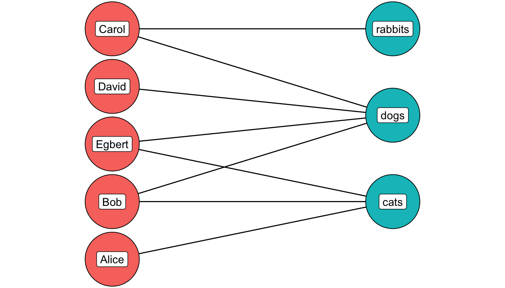
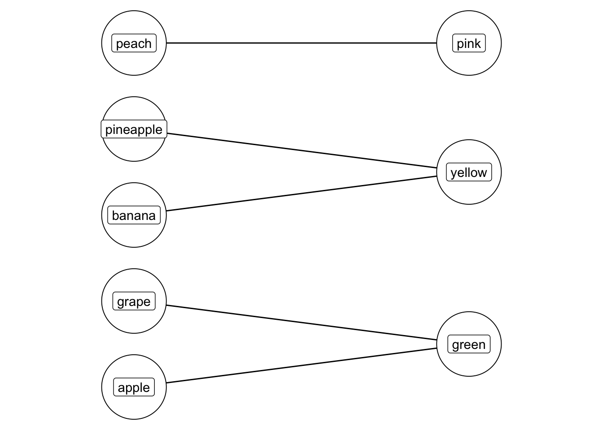

Week 5, class 2: Other network types
Bipartite networks
The work we have done so far has been on networks which are naturally what is known as unimodel or unipartite: person A sends a letter to person B. In a letter network there is only one type of node (a letter author or recipient), and one type of node (sends/receives a letter).
Many networks are not this straightforward, and have two, or more, types of nodes. For example, a network of twitter users connected to twitter groups, or a network of directors connected to companies. These networks are known as bimodal or bipartite, if there are two types of nodes, or tripartite when there’s three, and so forth.
The following is a diagram of a bipartite network of Facebook users and group membership.

In this network, the first type (red, on the left) are people, and the second type (green, on the right) are Facebook groups. A line is drawn from one to the other if they are a member of that group. Carol is a member of the rabbits and dog group, Carol, David, Bob, and Egbert are members of the dog group, and Egbert and Alice members of the cat group.
In digital humanities research, we often have access to bipartite network data, because almost any two sets of data points can be represented as a bipartite network. In some cases, the dataset can be derived rather than some pre-existing membership or category the data belongs to, as, for instance, in this study of the New Zealand parliament, which constructed a bipartite network of MPs to a set of speech topics, created using LDA topic modelling. In this model MPs are the first type, and topics the second, and these are used to construct a network of MPs based on their similarity across the topics they spoke about in Parliament.
From Curran B, Higham K, Ortiz E, Vasques Filho D (2018) Look who’s talking: Two-mode networks as representations of a topic model of New Zealand parliamentary speeches. PLoS ONE 13(6): e0199072. https://doi.org/10.1371/journal.pone.0199072
It’s important, therefore, to understand the extent to which regular network methods work or don’t work with this structure. Standard network measurements (such as degree) are easy to calculate using these networks, but are not always meaningful. In the above example, the degree count for each node (its connections) is simply a count of its group membership. Unlike in a regular network, the measurement doesn’t give any clues as to the most central member of the group. Similar problems exist for other metrics.
In many cases, then, we will need to do something to the network in order to get meaningful analysis from it. The most common thing to do is to project the network. This involves collapsing the network, and directly connecting one of the node types, based on their connections to the other. For example, the network above can be collapsed into two separate networks: a network of people connected by shared group membership, and a network of groups connected by shared members:

The network on the left displays a very common aspect of bipartite network projections: cliques, a cluster of nodes where each is connected to all the others.
In the network on the left, the edge becomes ‘shares a Facebook group with’, and on the right, ‘has shared members’.
Which of these two networks do you think is more appropriate?
To a certain extent, that depends on the question. The more obvious answer would be to build a network of people, but if we were more interested in the ‘ecosystem’ of Facebook groups and how they interact, then perhaps the second network type would be of more use.
At this point, regular network metrics can be used. We might use degree, for example, to demonstrate that Alice is peripheral to this network.
However, it’s important to be aware of what projecting the network does. Most importantly, there is a potential loss of information: in the new network, the edge only records that there is a shared group between two nodes, and the information on which groups specifically were shared is discarded.
Some of this information can be kept through a weight value attached to each node. In the diagram on the left above, Egbert and Bob have a weight of two, because they share two groups (cats and dogs). This weight information can be incorporated into your network metrics.
Technically almost any data can be modelled as a bipartite network. However, is it always appropriate?
To give a slightly ridiculous example, imagine you had a dataset of fruit, and their corresponding colours.
| fruit | color |
|---|---|
| apple | green |
| banana | yellow |
| peach | pink |
| pineapple | yellow |
| grape | green |
There is nothing stopping you from turning this into a bipartite network of fruit connected to colours, and even projecting this to a network of fruit directly connected by shared colours. It is very easy to technically turn this into a network.

But is it meaningful? Perhaps not, unless there was a very clear reason for doing (biologists may be interested in this very question!).
Conclusions
A co-authorship network like this can get very dense very quickly, because there are many books, and only a limited number of individuals, so there will be many connections between them. It may be more meaningful to filter the data, for example using the edge weight column, to only consider ‘stronger’ relationships in the network (nodes which share several books together).
The network also has a large number of ‘isolates’: nodes which are disconnected completely from the full network. These could also be removed, for visual clarity at least. To do this, you could filter to remove nodes with a total degree of one.
This projected network is inherently undirected, because the edge ‘shares a book title’ doesn’t have any direction associated with it.